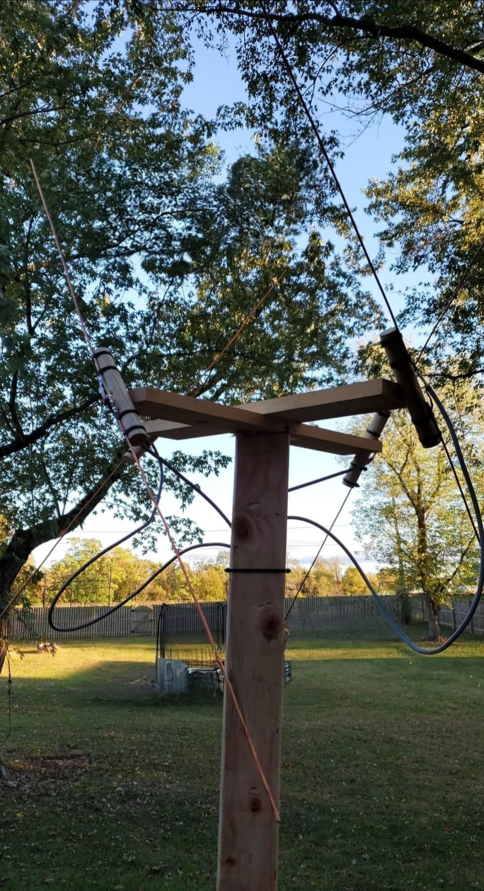

Receiving and decoding weather satellite transmissions has been an incredibly enjoyable and rewarding hobby for me. I began decoding satellite passes around 2019, and it’s a passion I’ve pursued ever since.
I have decoded weather data from the polar-orbiting NOAA and METEOR satellite series, as well as the geostationary GOES-16 satellite. NOTE: GOES-16 will soon transition out of its current orbit to make way for GOES-19. In the meantime, GOES-19 is actively transmitting images as it moves into its designated orbit. It's possible that when you are reading this that GOES-16 and GOES-19 have already moved to their new missions and this is old news.
Satellites transmit various 'products' down to Earth, including APT, LRPT, HRPT, and HRIT. Among these, APT and LRPT operate in the 137 MHz frequency band, making them easy to pick up using a homemade antenna and a software-defined radio (SDR) connected to a computer.
I spent an afternoon with a friend to make this "Double Cross Antenna" based on this design.
These images are fascinating to examine! Many programs designed to decode APT offer various enhancements for the images, such as false color. However, the false color options are somewhat limited since APT only transmits two channels. In contrast, LRPT from meteor satellites provides superior false color capabilities, as it includes three IR channels.
LRPT delivers higher resolution than APT and transmits an additional channel, resulting in images that are, in my opinion, much more captivating. The false color also appears significantly enhanced, adding to their visual appeal.